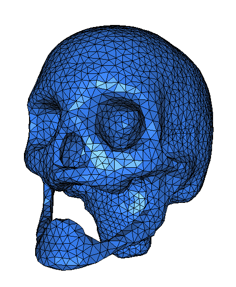
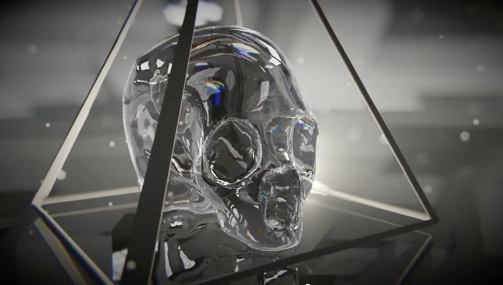

|
GPU Rendering
KellyWang
|
|
GPU Rendering
KellyWang
|
My program contains an App.cpp file that handles the GUIs and the functions that executes as soon as the program is run. After the program is initiated with the environment and camera set up, App::onGraphics3D prepares the parameters in C++ to transfer to the shaders, and the specified shader is executed for every pixel on the screen using multiple threads on the GPU. This program makes use of Ray Marching and distance estimators. We cast rays at the scene and find the intersection between a ray and a primitive by stepping through every point on the ray until we reach the surface. To avoid missing the surface accidentally, we use distance estimators to identify whether or not we have passed through the surface. This is implemented in the intersectScene function:
Given a point P,a vector w, a distance and a surfel, we increment the ray by translating the point P by w * t, where t is a scalar that keeps track of our distance along the ray. If we get close enough to the surface, we step back alon the ray by a small value we call 'epsilon,' to avoid the strange behavior that occurs close to the surface. Then we compute the normals to the scene at that point and update the estimated distance.
The sceneDistance function is used to estimate the distance from the point to specific primitives in the scene. This is where we take the union of primitives so that our ray marcher treats them as one continuous surface. The unionDistance function is implemented in the shader as well to choose the minimum distance. The shader also supports finding the intersection, subtraction operation, and the smin operations between two primitives.
My shaders are each based off the sample shader trace-analytic.pix. In each shader, I hard coded all the primitives I needed for my scene, giving them each a position, dimensions specific to their Struct definitions, and information about their material. Primitives are defined as Structs in my Primitives.glsl file, and each has a distance estimator function implemented. These functions take in a primitive, the given point P, a best current distance, which is initialized as infinity, and a material. They then return a distance estimate from the given point to the surface of the primitives.
I created four additional shaders, two of which were for testing primitives and the implicit ray tracer, and two of which were actual shaders for my custom scene. There is a lot of repetition between the shaders with the same raytracer included in each. To make my code neater, I could put the ray tracing code in a .glsl file and include it in each of the different shaders rather than repeating so much code in each, however I decided to overlook this in favor of finishing other required portions of the lab.
One error with my ray tracer is that there is some strange overlapping that occurs at a certain distance away from an object. This is most likely because of the maxDistance or the closeEnough variables declared in intersectScene.
I was amazed by how realistic this shadertoy looked, with the rocks on the ocean floor and the reflections on stuff floating on the surface. I also admired the colors used in the scene.x
This scene really appeals to me because it is not so representational, which gives it a unique, sketch-like style in contrast to rendered objects that sometimes look unrealistically perfect.

I really liked how the creator of this shader not only created a world using what looks like voxels, but also based it off real information from a landscape in real life.
I was inspired by skulls that I was drawing in my studio art class, and also by the implicit skull in the 5 Faces video we watched in class. Then I used an image from this website to model my object: http://www.cgal.org/Manual/3.3/doc_html/cgal_manual/Surface_mesher/Chapter_main.html.
|  |
| Inspiration for skull modeling |
|  |
| Inspired by 5 Faces by Fairlight |
First, I made sure all my primitives and operators were implemented correctly:
I implemented Sphere, Box, Torus, Cylinder, and Rounded Box, as well as Union, Intersection, Subtraction, Repetition, and Blending.
 |
| First Working Ray Tracer |
 |
| Box primitive working |
 |
| Cylinder appears |
 |
| A Torus appears |
 |
| Union is working |
 |
| Intersection |
 |
| Subtraction |
 |
| Repetition |
To make the actual skull, I blended two spheres (the cranium and the jaw) and a rounded box (to represent the brow bone) to form the foundation of the skull, and then intersected the form with two smaller spheres for the eye sockets, and a smaller rounded box for the mouth. I simply hard coded the coordinates and dimensions of each.
 |
| Preliminary Skull |
 |
| Night Scene |
 |
| Playing with Angles |
 |
| Metallic Skull |
For the repetition, I used the mod function on the point X passed into sceneDistance to tile each primitive that made up the skull. I then passed this newPointZ into the distance estimator functions of each primitive.
And this was the result:
 |
| Repeated Skulls |
Another problem I ran into was that the skull was too dark in the nightsky cubemap so I ended up adding an arbitrary AmbientCoefficient that I used to multiply L in the L_o function in the ray tracer I copied from trace-analytic.pix. This made the skull more visible in the scene.
Finally, to add the oscillating rings, I simply placed a couple torus objects around the skull and varied the point X in sceneDistance by a sin function on the g3d_SceneTime variable.
 |
| Oscillating rings |
I started by looking at the sample films showed in class for inspiration. In particular I chose 5 Faces, and made a storyboard noting the different camera angles and camera movements used. Then, I made a storyboard for my own video. I originally intended to have a skull melt onto a plane, but in the interest of time I decided not to implement that and instead relied on strategic camera movement and camera angles, and upbeat music to add interest to the film.
 |
| Storyboard for 5 Faces |
 |
| Storyboard for my custom scene |
Music: http://audionautix.com/index.php
▶ Play Video |
| Final Film |
Required hours: 12 Optional: 8
I'd rate the project as difficult because it took a long time and was a little confusing to look at all the different sample code and translate that to glsl. I had a hard time figuring out which parts of the code were important and how to structure the code between operations, estimator functions, and primitives. As a result, this lab took longer than usual.
 1.8.9.1
1.8.9.1


{kind=link}
{kind=link}
{kind=link}
{kind=link}